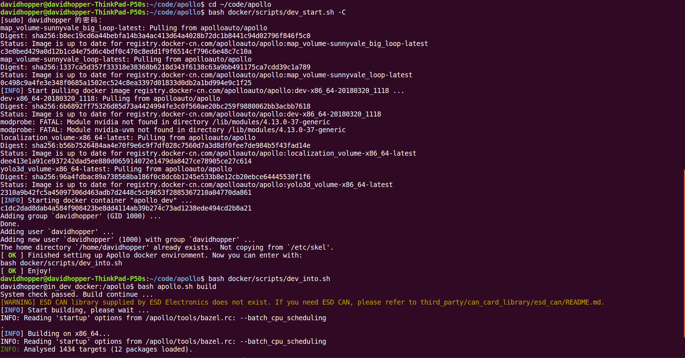
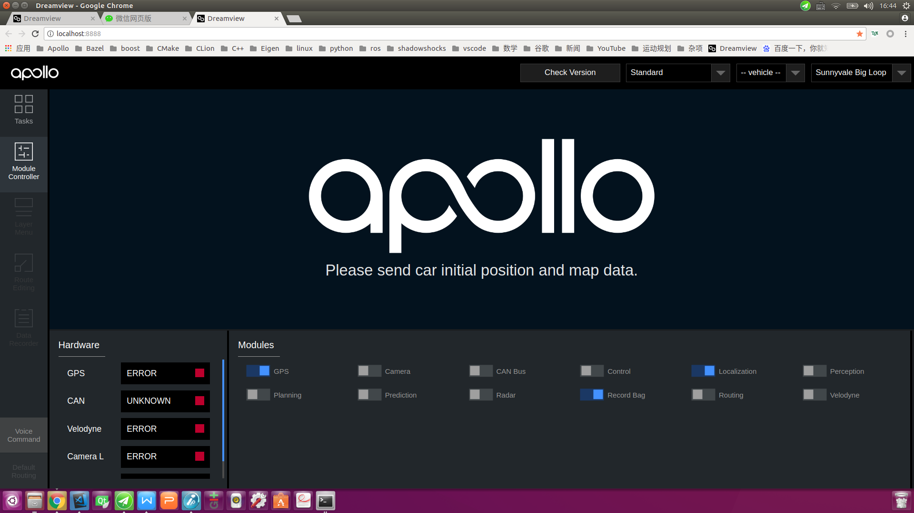
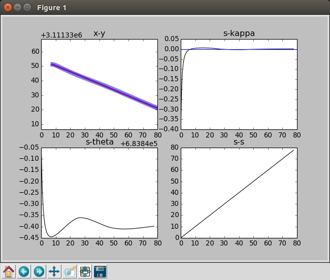
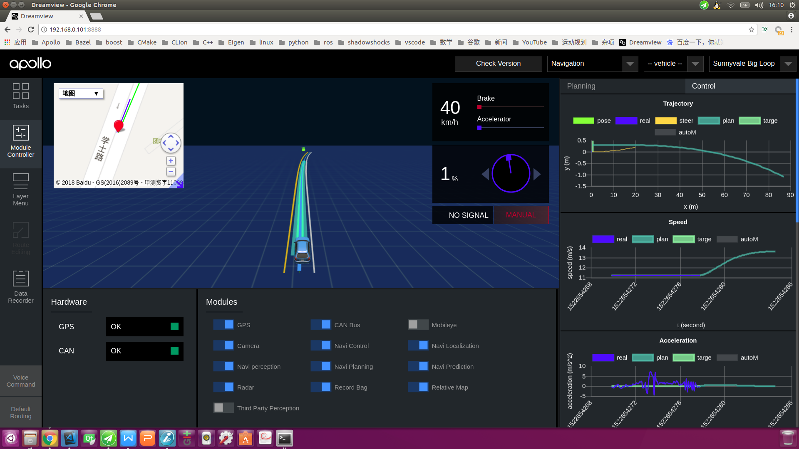
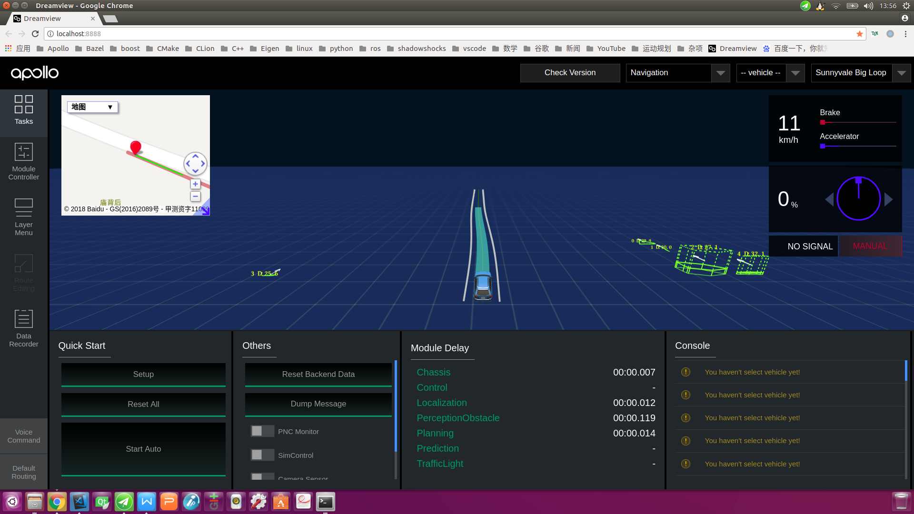

Apollo 2.5版导航模式的使用方法¶
Apollo项目以其优异的系统架构、完整的模块功能、良好的开源生态及规范的代码风格，受到众多开发者的喜爱和好评。不过在Apollo之前的版本中，感知、预测、导航、规划模块均依赖于高精地图，而高精地图的制作方法繁琐且不透明，对于很多开发者而言，这是一个难以逾越的障碍。因为没有高精地图，很多人只能使用Apollo提供的模拟数据包进行走马观花式的观赏，而无法在测试道路上完成真枪实弹式的实车调试，这极大降低了Apollo项目带来的便利，也不利于自动驾驶开源社区的发展和壮大。显然，Apollo项目组已注意到该问题，经过他们几个月的艰苦努力，终于在2.5版开发了一种新的基于相对地图(relative map)的导航模式(navigation mode)，利用该模式可顺利实施测试道路上的实车调试。
相对地图是Apollo2.5引入的新特性。从架构层面，相对地图模块是连接高精地图(HD Map)、感知(Perception)模块和规划(Planning)模块的中间层。相对地图模块会实时生成基于车身坐标系的地图（格式与高精地图一致），并且输出供规划模块使用的参考线。更多信息，可以参考相对地图的说明文档。从开发者友好性角度看，基于相对地图的导航模式，让开发者可以不依赖高精地图便可实施测试道路的实车调试，极大降低了开发者的使用门槛。
导航模式的基本思路是：
通过人工驾驶方式录制测试道路上的行驶轨迹；
利用
Apollo工具对原始轨迹进行处理得到平滑轨迹，该轨迹既用于替代路由(routing)模块输出的导航路径，也是规划(planning)模块用到的参考线（或称指引线、中心线，reference line），还是生成相对地图（relative map）的基准线。此外，平滑轨迹还可用于替换高精地图内某些车道的参考线（默认情况下，高精地图将车道中心线作为参考线，在道路临时施工等特殊情形下该方式很不合适，需使用人工录制并平滑处理的轨迹替换特殊路段的车道参考线，当然本文不讨论该项内容）；驾驶员将车辆行驶到测试道路起点，在
Dreamview中打开导航(Navigation)选项及相关功能模块，切换到自动驾驶模式并启动车辆；自动驾驶过程中，感知（
perception）模块的相机（camera）动态检测道路边界及障碍物，地图（map）模块下的相对地图（relative map）子模块基于参考线及道路边界实时地生成相对地图（使用以车辆当前位置为原点的相对坐标系），规划（planning）模块依据地图模块输出的相对地图和感知模块输出的障碍物信息，动态输出局部行驶路径给控制(control)模块执行。目前，导航模式仅支持单车道行驶，可完成加减速、跟车、遇障碍物减速停车或在车道宽度允许的情形下对障碍物绕行等功能，后续版本的导航模式将会进一步完善以支持多车道行驶、交通标志和红绿灯检测等。
本文对Apollo2.5版的构建、参考线数据采集与制作、Dreamview前端编译配置、导航模式使用等内容进行全面阐述，希望能给各位开发者正常使用Apollo 2.5版带来一定的便利。
一、Apollo 2.5版的构建¶
首先从GitHub网站下载Apollo2.5版源代码，可以使用git命令下载，也可以直接通过网页下载压缩包。源代码下载完成并放置到合适的目录后，可以使用两种方法构建：1.在Visual Studio Code中构建（推荐）；2.使用命令行构建。当然，两种方法都有一个前提，就是在你的机器上已经顺利安装了Docker。你可以使用Apollo提供的脚本文件install_docker.sh安装Docker。
1.1 在Visual Studio Code中构建¶
打开Visual Studio Code，执行菜单命令文件->打开文件夹，在弹出的对话框中，选择Apollo项目源文件夹，点击“确定”，如下图所示：


之后，执行菜单命令任务->运行生成任务或直接按快捷键Ctrl+Shift+B（与Visual Studio和QT的快捷键一致）构建工程，若之前没有启动过Docker，则编译时会启动Docker，需在底部终端窗口输入超级用户密码。命令执行完毕，若在底部终端窗口出现终端将被任务重用，按任意键关闭。信息（如下图所示），则表示构建成功。整个过程一定要保持网络畅通，否则无法下载依赖包。构建过程可能会遇到一些问题，解决方法可参见我写的一篇博客 ，也可直接查看GitHub网站的帮助文档。

1.2 在命令行中构建¶
按快捷键Ctrl + Alt + T打开命令行终端，输入如下命令启动Docker：
cd your_apollo_project_root_dir
# 从中国大陆访问，最好加上“-C”选项，直接访问中国大陆镜像服务器以获取更快的下载速度
bash docker/scripts/dev_start.sh -C
输入如下命令进入Docker：
bash docker/scripts/dev_into.sh
在Docker内部，执行如下命令构建Apollo项目：
bash apollo.sh build
整个操作如下图所示：

1.3 修改定位模块UTM区域ID¶
Apollo项目定位(localization)模块默认使用美国西部UTM坐标，在国内需要修改该值。在Docker外部，使用vi或其他文本编辑器，打开文件[apollo项目根目录]/modules/localization/conf/localization.conf，将下述内容：
--local_utm_zone_id=10
修改为下述内容（这是长沙地区的UTM区域ID，中国UTM分区可参考该网页）：
--local_utm_zone_id=49
**注意：**如果录制数据时未修改上述内容，则线下模拟测试回放数据包时只能将错就错，千万不能再修改该值，否则地图上的参考线定位会出错！有一次我采集数据时，忘了修改该值，回放数据时又进行修改，结果导致参考线定位到了美国西海岸！我取消修改，按F5键刷新浏览器后显示就恢复正常了。
1.4 配置Dreamview使用的UTM区域ID¶
打开文件[apollo项目根目录]/modules/common/data/global_flagfile.txt，在最后一行添加如下语句（这是长沙地区的UTM区域ID，中国UTM分区可参考该网页）：
--local_utm_zone_id=49
二、参考线原始数据的采集¶
将构建好的Apollo项目文件导入车内工控机，并按照步骤1.2的方法进入Docker，再执行如下命令，启动Dreamview服务端程序：
bash scripts/bootstrap.sh
在浏览器中打开网页http://localhost:8888（注意不要使用代理），进入Dreamview界面，如下图所示：

1 驾驶员将车辆驶入待测试路段起点；
2 操作员点击Dreamview界面左侧工具栏中的Module Controller按钮，进入模块控制页面，选中GPS、Localization、Record Bag选项，注意：如果采集的数据包需用于线下模拟测试，还需加上CAN Bus选项。

3 驾驶员从起点启动车辆并按预定路线行驶至终点；
4 操作员关闭Dreamview界面中的Record Bag选项，此时会在/apollo/data/bag目录（这是Docker中的目录，宿主机上对应的目录为[你的apollo根目录]/data/bag）中生成一个类似于2018-04-01-09-58-00的目录，该目录中保存着类似于2018-04-01-09-58-00.bag的数据包。这就是我们所需的数据包，请记住它的路径及名称。**注意：**单个数据包文件的默认录制时长为1分钟，默认文件大小为2048MB，可通过修改文件/apollo/scripts/record_bag.sh来改变默认值。
为后文阐述方便起见，我假设数据包2018-04-01-09-58-00.bag直接存放于/apollo/data/bag目录。
三、参考线的制作¶
参考线的制作既可在车内工控机内完成，也可在其他计算机上实施。无论在哪台计算机上制作，我们首先假定已按步骤1.2的方法进入Docker，并按照步骤二中录制的数据包放置在/apollo/data/bag目录中，且假定该文件名为2018-04-01-09-58-00.bag（在你的机器上并非如此，这样做只是为了后文阐述方便而已）。
3.1 从原始数据包提取裸数据¶
在Docker内部，使用如下命令从原始数据包提取裸数据：
cd /apollo/modules/tools/navigator
python extractor.py /apollo/data/bag/2018-04-01-09-58-00.bag
上述命令会在当前目录（易知我们在/apollo/modules/tools/navigator目录中）生成一个提取后的裸数据文件：path_2018-04-01-09-58-00.bag.txt。
为了验证裸数据的正确性，可以使用如下命令查看：
python viewer_raw.py ./path_2018-04-01-09-58-00.bag.txt
会显示类似下图的路径图：

3.2 对裸数据进行平滑处理¶
如果录制数据时，车辆行驶不够平顺，提取的裸轨迹数据可能会不光滑，有必要对其进行平滑处理。继续在Docker内部使用如下命令完成平滑处理：
bash smooth.sh ./path_2018-04-01-09-58-00.bag.txt 200
注意：上述命令中200是平滑处理的长度，该值一般为150-200，如果执行失败，可尝试调整该参数，再次进行平滑。
为了验证平滑结果的正确性，可以使用如下命令查看：
python viewer_smooth.py ./path_2018-04-01-09-58-00.bag.txt ./path_2018-04-01-09-58-00.bag.txt.smoothed
其中，第一个参数./path_2018-04-01-09-58-00.bag.txt是裸数据，第二个参数./path_2018-04-01-09-58-00.bag.txt.smoothed是平滑结果，显示效果类似下图：

四、Dreamview前端的编译¶
Dreamview前端默认使用Baidu地图，也可修改为Google地图，但需重新编译Dreamview前端，具体方法如下（注意：如不需修改地图设置，可忽略该节内容）：
4.1 更改导航地图¶
打开文件[apollo项目根目录]/modules/dreamview/frontend/src/store/config/ parameters.yml，根据需要将下述内容替换为Google地图或Baidu地图：
navigation:
# possible options: BaiduMap or GoogleMap
map: "BaiduMap"
# Google Map API: "https://maps.google.com/maps/api/js"
# Baidu Map API: "https://api.map.baidu.com/api?v=3.0&ak=0kKZnWWhXEPfzIkklmzAa3dZ&callback=initMap"
mapAPiUrl: "https://api.map.baidu.com/api?v=3.0&ak=0kKZnWWhXEPfzIkklmzAa3dZ&callback=initMap"
4.2 重新编译Dreamview前端¶
按照步骤1.2的方法进入Docker，运行如下命令编译Dreamview前端：
# 安装Dreamview前端依赖包，注意：该步骤只需执行一次，不必每次执行
cd /apollo/modules/dreamview/frontend/
yarn install
# 编译Dreamview前端
cd /apollo
bash apollo.sh build_fe
编译过程可能会出现如下错误：
ERROR in ../~/css-loader!../~/sass-loader/lib/loader.js?{"includePaths":["./node_modules"]}!./styles/main.scss*
*Module build failed: Error: ENOENT: no such file or directory, scandir '/apollo/modules/dreamview/frontend/node_modules/node-sass/vendor'*
...
（后面还有一长串，不再一一列出）
这是内部依赖包不一致造成的，解决方法如下：
在Docker内部，运行如下命令（注意：一定要保持网络畅通，否则无法重新下载依赖包）：
cd /apollo/modules/dreamview/frontend/
rm -rf node_modules
yarn install
cd /apollo
bash apollo.sh build_fe
五、导航模式的使用¶
5.1. 打开Dreamview并开启导航模式¶
进入Docker，启动Dreamview，命令如下：
cd your_apollo_project_root_dir
# 如果没有启动Docker，首先启动，否则忽略该步
bash docker/scripts/dev_start.sh -C
# 进入Docker
bash docker/scripts/dev_into.sh
# 启动Dreamview后台服务
bash scripts/bootstrap.sh
若是线下模拟测试，则将步骤二中录制好的数据包/apollo/data/bag/2018-04-01-09-58-00.bag（这是我机器上的录制数据）循环播放；若是实车调试，则忽略该步骤。
# 模拟测试情形下，循环播放录制数据；实车调试情形忽略该步骤
rosbag play -l /apollo/data/bag/2018-04-01-09-58-00.bag
在浏览器中打开网页http://localhost:8888（注意不要使用代理），进入Dreamview界面，点击右上方下拉框，将模式设置为Navigation（导航模式），如下图所示：

5.2 启用导航模式下的相关功能模块¶
点击Dreamview界面左侧工具栏中的Module Controller按钮，进入模块控制页面。若是线下模拟测试，选中Relative Map、Navi Planning选项，其他模块根据需要开启，如下图所示（图中显示空白文本的模块是Mobileye模块，需安装配置好相关硬件后才可见））：

若是实车调试，建议除Record Bag、Mobileye（若Mobileye硬件未安装，则会显示为空白文本）和Third Party Perception模块外，其余模块全部开启，如下图所示：

5.3 发送参考线数据¶
在Docker内部，使用如下命令发送步骤三中制作的参考线数据：
cd /apollo/modules/tools/navigator
python navigator.py ./path_2018-04-01-09-58-00.bag.txt.smoothed
下图是线下模拟测试情形下Dreamview接收到参考线后的界面，注意界面左上角已出现了百度地图界面，我们发送的参考线在百度地图中以红线方式、在主界面中以白色车道线的方式展现。

下图是实车调试情形下的Dreamview接收到参考线后的界面，注意界面左上角已出现了百度地图界面，我们发送的参考线在百度地图中以红线方式、在主界面中以黄色车道线的方式展现。

需注意以下几点：
(1) 如果发送参考线数据后，Dreamview界面不能正确显示参考线，可能有以下方面的原因：一是参考线数据未正确发送，解决办法是再次执行发送命令；二是浏览器缓存不一致，解决办法是按Ctrl + R或F5键刷新显示，或者清理浏览器缓存；三是Dreamview后台服务程序运行异常，解决办法是在Docker内部重启Dreamview后台服务，命令如下：
# 停止Dreamview后台服务
bash scripts/bootstrap.sh stop
# 重新启动Dreamview后台服务
bash scripts/bootstrap.sh
(2) 每次车辆重新回到起点后，无论是线下模拟测试还是实车调试情形，均需再次发送参考线数据。